Baselines, tests & the model neuron
Reader-friendly version of the 47 lecture slides: the lecture content in normal flow, with figure descriptions and data tables where the figure carries data. Open the presentation.
Slide 1

Baselines, tests & the model neuron
Slide 2
Flexible or abstract: can one population be both?
Two scores of one population, shattering and CCGP, and why they trade off
Slide 3
Reminder: shattering measures flexibility

The shattering figure from the last lecture: two blocks of eight small panels, one per way to color three stimuli blue or red. Top, three stimuli in general position: every panel has a line separating blue from red, 8 of 8. Bottom, three stimuli on one line: 6 of 8
Open full-size figure- Flexible: a downstream neuron can learn many different groupings of the same stimuli
- 3 stimuli in 2 units, in general position: a line separates all 8 splits. On one line: 6 of 8
- In general: stimuli in general position in units, every split is separable
- Shattering accuracy: fit a readout for each of many arbitrary half-and-half splits, score it on held-out trials, and average. 0.5 = guessing
- More dimensions, more splits solved. But it says nothing about stimuli never seen. Dimensions used: the participation ratio (PR)
Slide 4
Reminder: CCGP measures abstraction

A readout for animate against inanimate is fitted on dogs and chairs, then applied to cats and tables. Left, shattering refits a readout for every split of the same objects; right, CCGP fits once and keeps the weights fixed for objects it never saw
Open full-size figure- CCGP (cross-condition generalization performance): fit an "animate or not" readout on dogs and chairs, then test it, weights fixed, on cats and tables
- A high CCGP means the code for animacy is abstract: not tied to the training examples (dogs, chairs), so it carries over to new ones (cats, tables)
Slide 5
The task: a hidden context
![Schematic of one trial: inter-trial interval 1750 ms, hold the button and fixate 400 ms, one of four images A to D for 500 ms, hold or release within 900 ms, a 500 ms wait, then the outcome, juice or nothing. Below, two tables, each row tagged with its condition. Context 1 (red): A release, juice, A plus; B hold, juice, B plus; C release, none, C minus; D hold, none, D minus. Context 2 (blue): A hold, none, A minus; B release, juice, B plus; C hold, juice, C plus; D release, none, D minus. Between them: switch every 50 to 70 trials, no cue, inferred from outcomes](../images/L06/bernardi_task.svg)
Schematic of one trial: inter-trial interval 1750 ms, hold the button and fixate 400 ms, one of four images A to D for 500 ms, hold or release within 900 ms, a 500 ms wait, then the outcome, juice or nothing. Below, two tables, each row tagged with its condition. Context 1 (red): A release, juice, A plus; B hold, juice, B plus; C release, none, C minus; D hold, none, D minus. Context 2 (blue): A hold, none, A minus; B release, juice, B plus; C hold, juice, C plus; D release, none, D minus. Between them: switch every 50 to 70 trials, no cue, inferred from outcomes
Open full-size figureSchematic of the task of Bernardi et al. (2020)
- Memorized associations are not enough: the monkey must hold context
- An uncued context flips the rules. Neurons are read before the response, so action and value are the previous trial's
Slide 6
The monkeys infer the hidden context
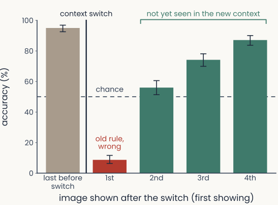
Bar chart redrawn from Bernardi et al. (2020) Fig. 1c: accuracy in percent, 0 to 100, on the first showing of each image around an uncued context switch, marked by a vertical line. Last image before the switch: 95.0% (95% confidence interval 92.6 to 96.9). After the switch, 1st image, old rule, wrong: 8.7% (6.3 to 11.6). Images 2 to 4, not yet seen in the new context: 56.0% (51.4 to 60.6), 74.2% (69.9 to 78.1) and 87.1% (83.7 to 90.0). A dashed line marks chance, 50%
Open full-size figure
- After one surprise, the monkeys switch all the rules
- Accuracy on the last image before a switch, then on the first showing of each image after it
- 1st image after the switch: about 9% correct. Nothing warned the monkey
- 2nd to 4th images, not yet seen in the new context: above chance (dashed line, 50%)
- Bernardi et al. call this inference: it needs a variable for context, coded apart from any one image
- The question for the neurons: how must a population hold context to allow this? Shattering and CCGP measure it
Slide 7
Toy geometry: clustered by context

Schematic in the space of three units x1, x2, x3: four conditions A+, C− (red, context 1) and A−, C+ (blue, context 2), each a mean with its noisy trials. A+ and C+ are filled (fitted on), C− and A− hollow (never seen). A gold plane, the context readout fitted on A+ and C+. Bars at right: shattering, CCGP context
Open full-size figureCartoon, not recordings: simulated trials, after Bernardi et al. (2020), Fig. 2
- Abstract, not flexible
- Red/blue: context 1/2. The readout (yellow plane) decodes which context the trial is in from the neurons. It is fitted on one condition per context (A+, C+: filled) and tested, weights frozen, on the other two (C−, A−: hollow)
- The conditions cluster by context
- CCGP 1.0: context transfers. Shattering 0.73: conditions within a context cannot be told apart
Slide 8
Toy geometry: points in general position

Schematic in the space of three units x1, x2, x3: four conditions A+, C− (red, context 1) and A−, C+ (blue, context 2), each a mean with its noisy trials. A+ and C+ are filled (fitted on), C− and A− hollow (never seen). A gold plane, the context readout fitted on A+ and C+. Bars at right: shattering, CCGP context
Open full-size figureCartoon, not recordings: simulated trials, after Bernardi et al. (2020), Fig. 2
- Flexible, not abstract
- Red/blue: context 1/2. Same context readout: fitted on A+, C+ (filled), tested on C−, A− (hollow)
- conditions at random in neurons: general position, so every split is separable ()
- Context can be decoded: a plane fitted on all four separates red from blue (shattering 1.0). CCGP 0.50: the plane fitted on A+, C+ cuts right through C− and A−
Slide 9
Toy geometry: a square

Schematic in the space of three units x1, x2, x3: four conditions A+, C− (red, context 1) and A−, C+ (blue, context 2), each a mean with its noisy trials. A+ and C+ are filled (fitted on), C− and A− hollow (never seen). A gold plane, the context readout fitted on A+ and C+. Bars at right: shattering, CCGP context, CCGP value
Open full-size figureCartoon, not recordings: simulated trials, after Bernardi et al. (2020), Fig. 2
- Abstract, but not fully flexible
- Red/blue: context 1/2. Context readout (yellow plane): fitted on A+, C+ (filled), tested on C−, A− (hollow)
- Corners of a square: one side is context ({A+, C−} vs {A−, C+}), the other value, i.e. reward ({A+, C+} vs {A−, C−})
- Generalization: CCGP 0.78 (context), 0.72 (value). Shattering 0.82: the diagonal split, image A (A+, A−) vs image C (C+, C−), fails. It is context XOR value
Slide 10
Toy geometry: the square, bent

Schematic in the space of three units x1, x2, x3: four conditions A+, C− (red, context 1) and A−, C+ (blue, context 2), each a mean with its noisy trials. A+ and C+ are filled (fitted on), C− and A− hollow (never seen). A gold plane, the context readout fitted on A+ and C+. Bars at right: shattering, CCGP context, CCGP value
Open full-size figureCartoon, not recordings: simulated trials, after Bernardi et al. (2020), Fig. 2
- Flexible and abstract at once
- Red/blue: context 1/2. Context readout (yellow plane): fitted on A+, C+ (filled), tested on C−, A− (hollow)
- Bending the square adds a dimension: the A and C conditions move apart along a third direction, so the four no longer fit in a plane (PR 2.0 → 2.5)
- Shattering 1.0: the diagonal split separates too. Generalization still holds: CCGP 0.77, 0.73
Slide 11
Try it: flexible or abstract?
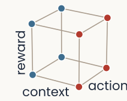
Small reminder sketch: a cube whose eight corners are the eight conditions, red for context 1 and blue for context 2, with its edges labelled context, action and reward
Open full-size figure
The demo at the compromise setting: shattering accuracy 0.80; CCGP 0.80 for context, 0.83 for action, 0.80 for reward; decoding with all conditions in training 0.93 to 0.96; on the condition map, a context readout fitted on six conditions puts both held-out conditions (hollow points) on the correct side of its boundary; the gold segments tilt slightly in different directions; the inset shows three large and four small variances, participation ratio 4.1
Open full-size figure- λ: cube (0) to general position (1). Shattering rises, CCGP falls, decoding stays high
Slide 12
Hippocampus: context transfers, action does not
![Bernardi et al. (2020) Fig. 3e. For hippocampus (HPC), dorsolateral prefrontal cortex (DLPFC) and anterior cingulate cortex (ACC), a vertical axis from 0.4 to 1 labelled shattering dimensionality and CCGP, with a dashed line at 0.5. Short black lines mark the measured CCGP of three variables, each on a set of coloured dots from 100 runs of a perfect-cube model: context in red (HPC 0.96, DLPFC 0.74, ACC 0.81), value of the previous trial in purple (0.79, 0.88, 0.94) and action of the previous trial in orange (0.44, 0.75, 0.90). Short grey lines mark the measured shattering dimensionality (0.70, 0.75, 0.74). Clusters of white dots, the cube model's shattering dimensionality, sit lower, at about 0.60, 0.62 and 0.65](../images/L06/pub_bernardi2020_fig3e.png)
Bernardi et al. (2020) Fig. 3e. For hippocampus (HPC), dorsolateral prefrontal cortex (DLPFC) and anterior cingulate cortex (ACC), a vertical axis from 0.4 to 1 labelled shattering dimensionality and CCGP, with a dashed line at 0.5. Short black lines mark the measured CCGP of three variables, each on a set of coloured dots from 100 runs of a perfect-cube model: context in red (HPC 0.96, DLPFC 0.74, ACC 0.81), value of the previous trial in purple (0.79, 0.88, 0.94) and action of the previous trial in orange (0.44, 0.75, 0.90). Short grey lines mark the measured shattering dimensionality (0.70, 0.75, 0.74). Clusters of white dots, the cube model's shattering dimensionality, sit lower, at about 0.60, 0.62 and 0.65
Open full-size figure- Context transfers in all three areas, and shattering is high too: like the compromise in the demo
- Both scores are average accuracies of linear readouts; chance is 0.5 (dashed)
- Black: CCGP (red context, orange previous action, purple value). Grey: shattering. The dots come from the authors' model
- Context CCGP: 0.96 HPC, 0.74 DLPFC, 0.81 ACC. Shattering: 0.70, 0.75, 0.74
- Previous action in HPC: 0.44: below the dashed line, but within chance range (0.41–0.59). Not abstract, yet decodable
Slide 13
Errors: the geometry breaks, the information does not
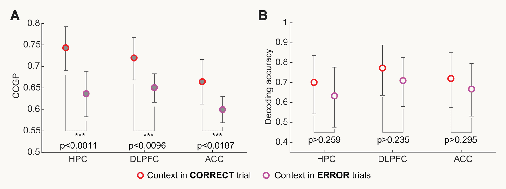
Bernardi et al. (2020) Fig. 6a and 6b. A: context CCGP on correct trials (red) and error trials (magenta) in HPC, DLPFC and ACC; on error trials it is lower in all three areas, about 0.74 to 0.64, 0.72 to 0.65 and 0.67 to 0.60, each marked significant. B: decoding accuracy for context on correct and error trials in the same areas, about 0.70 to 0.63, 0.77 to 0.71 and 0.72 to 0.67, none significant
Open full-size figure- When the monkeys err, context loses its abstract format but can still be decoded
- A: context CCGP drops on error trials in all three areas. B: decoding of context, with all conditions in training, does not drop significantly
Slide 14
Recap: measures of one population
| Measure | What it says about the representation | Compared with |
|---|---|---|
| Participation ratio | How many dimensions it uses | the number of units |
| Readout accuracy | Whether a variable is explicit | majority-class baseline |
| Shattering accuracy | How flexible it is: how many groupings it allows | guessing, 0.5 |
| CCGP | How abstract it is: one format across conditions | chance, 0.5 |
Why it matters: shattering says how many new rules a downstream neuron could learn from the population; CCGP says whether what it learned carries over to new situations, and it drops when the monkeys err.
Each score is one number about one population. When does such a number mean anything?
Slide 15
Baselines and tests
Slide 16
When does a score mean anything?

Two 51 by 51 dissimilarity matrices for the same Bao objects in the same category order, with object thumbnails along the edges, from monkey IT (480 neurons, left) and ResNet-18's late layer (4,096 units, right). Both show a light block for faces and lighter blocks within animals and within vehicles
Open full-size figureFrom the last lecture: correlation-distance RDMs of 51 object means, monkey IT and ResNet-18's late layer
- IT vs ResNet-18: RSA = 0.71. Is that high? A quantitative claim needs three things: is it statistically significant, is it reliable across samples of images, how close is it to its ceiling?
Slide 17
1. Is the score above chance?
What a meaningless pairing scores: shuffles and random baselines
Slide 18
Correlation by chance: the null distribution
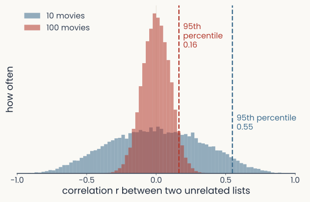
Two overlaid histograms of the correlation between two unrelated lists of random ratings, from 20,000 simulated pairs. With 10 movies (blue) the histogram is wide, spanning about minus 0.6 to plus 0.6, with its 95th percentile at 0.55. With 100 movies (red) it is narrow, about minus 0.2 to plus 0.2, with its 95th percentile at 0.16
Open full-size figure
- Unrelated data still correlate a little, by luck
- Null hypothesis: the two lists are unrelated. Two people rate 100 movies without watching them
- Their ratings still correlate by chance, up to about ±0.2. With only 10 movies, up to about ±0.6
- Null distribution: the spread of the score over many unrelated pairs
- A score is above chance if it beats the null distribution's 95th percentile: only 5% of unrelated pairs score higher
Slide 19
Above chance? Shuffle the images
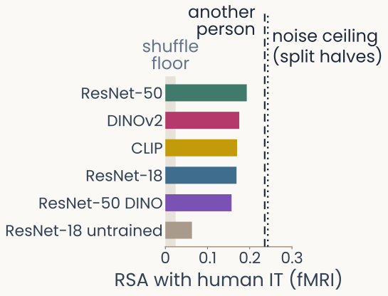
Horizontal bars of RSA between six networks and one person's IT measured with fMRI on 100 THINGS images, all trained networks between 0.16 and 0.19 and the untrained one near 0.06. A grey band near 0.02 marks the 95th percentile of the shuffled-image scores; a dashed line marks another person's IT and a dotted line the split-half noise ceiling, both near 0.24
Open full-size figure
Computed: THINGS-fMRI, one person's IT (3,720 voxels), 100 images; six networks; 1,000 shuffles
- Only the part of a score above its shuffled baseline comes from matching the images
- Permutation (shuffle) test: shuffle one system's image order, recompute the score, repeat 1,000 times. This builds the null distribution from the data themselves
- A score passes if it lies above the 95th percentile of the shuffled scores. Monkey IT vs ResNet-18 passes: 0.71 against 0.055. So does every trained network in the figure
- Dashed and dotted lines: another person's IT and the noise ceiling, both explained later today
Slide 20
Readouts: shuffle the labels

Two panels for a readout of animate versus inanimate from 480 monkey IT neurons, trained on 102 images and tested on 306. Left: accuracy bars; with true labels, training 1.00 and test 0.96; with shuffled training labels, training 1.00 and test 0.56 on average, below a dashed majority-class line at 0.63. Right: histogram of the test accuracy over 1,000 label shuffles, centred near 0.55, with its 95th percentile marked near 0.67 and the true-label test accuracy, 0.96, far to the right
Open full-size figure- Bao et al. (2020) IT, 480 neurons. Animate vs inanimate, fit on 102 images, tested on 306
- Shuffled labels: 1.00 on training, chance on test (0.56). So we need separate test images
- Curse of dimensionality: more neurons (480) than training images (102), so any labels fit. Deep networks too (Zhang et al. 2017)
Slide 21
Random directions in many dimensions
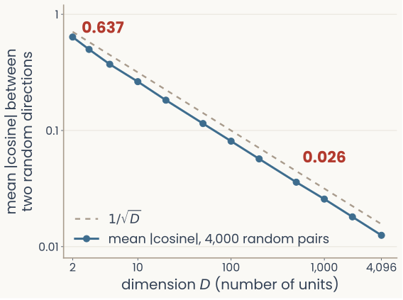
Histograms of the cosine between two random vectors for 2, 10, 100 and 1,000 dimensions, and a curve of the mean absolute cosine against the number of dimensions: in 2 dimensions the cosines spread from minus 1 to 1; as the dimension grows they pile up around 0, and the mean absolute cosine falls roughly as one over the square root of the dimension
Open full-size figure
Computed: random Gaussian vectors, 4,000 pairs per dimension
- Within one system: each stimulus is a vector of unit responses. In 1,000-D, two random stimulus vectors are nearly perpendicular: mean 0.026 (2-D: 0.64)
- More units than stimuli: all stimuli nearly perpendicular, so 102 images in 480 neurons took any labels
Slide 22
Few stimuli: unrelated systems can score high
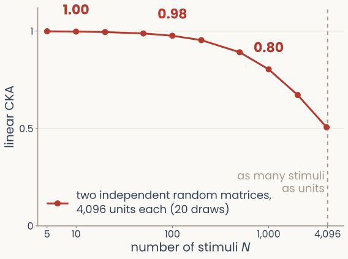
Linear CKA between two matrices of random Gaussian numbers, with more units than stimuli, against the number of stimuli on a log axis: near 1 with ten stimuli and falling as stimuli are added, although the two matrices share nothing
Open full-size figure
- Linear CKA compares two systems' Gram matrices (dot products between stimuli). Two unrelated random systems, 4,096 units: near 1 with 10 stimuli
- Few stimuli, many units: each Gram matrix is mostly its diagonal, alike in any two systems
Slide 23
2. Would it hold on new images?
Two kinds of new images: images the fit never saw (cross-validation), and another sample of images (bootstrap)
Slide 24
Hold out every image once: cross-validation
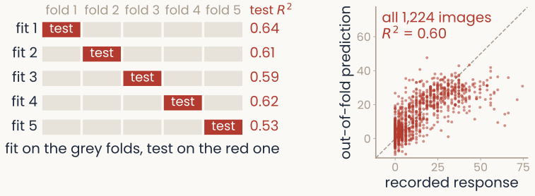
Left, a schematic of 5-fold cross-validation: five rows labelled fit 1 to fit 5, each a strip of five folds; in row k, fold k is red and marked test and the other four are grey, so every fold is tested exactly once. Right, for one monkey IT site predicted from a network's features, each of the 1,224 images' out-of-fold prediction against its recorded response, scattered along the diagonal, R-squared 0.60 over all images
Open full-size figure
- k-fold cross-validation (left): 5 folds; fit on four, test on the fifth, rotate. Every image is tested once, by a fit that never saw it
- Right: one IT site predicted from ResNet-18 (fit next lecture). Score R²: here the squared correlation of prediction and response (, )
- One split can be lucky: one fold alone gives R² 0.53 to 0.64; all five together, 0.60
Slide 25
Leakage: keep the test images out of every step
- Leakage: the test images influence some step of the fit. The test score is then too optimistic
- Every step is fit on the training images only: the z-scoring mean and standard deviation, the PCA directions, any setting (such as a penalty strength), and the weights
- Small leak: z-scoring with the mean of all images. Large leak: choosing units or settings by their test score; then even pure noise can look predictive
- Split first, then fit every step on the training images
Note: in our assignments the IT recordings come already cleaned, with missing values filled and each unit centred and scaled, using all 1,224 images before any split. That is a small leak, accepted to keep the assignments simple. To publish, do these steps on the training images only.
Slide 26
Would the ranking hold on a new sample of images?
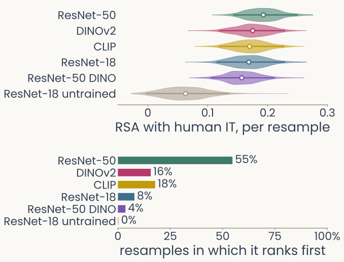
Top: overlapping distributions of RSA with human IT for six networks over resampled image sets, the trained ones spanning roughly 0.11 to 0.25 and the untrained one near 0.06. Bottom: across 1,000 resamples of the 100 images, ResNet-50 ranks first in 55 percent, CLIP in 18 percent, DINOv2 in 16 percent, ResNet-18 in 8 percent, ResNet-50 DINO in 4 percent and the untrained network in 0 percent
Open full-size figure
Computed: the same THINGS-fMRI data, 1,000 resamples
- Cross-validation tests a fit on new images. But any score, even RSA with no fit, depends on which images the study used
- Bootstrap: draw 100 of our 100 images with replacement (some twice, some never), and rescore every model; repeat 1,000 times
- Criterion: compare two networks resample by resample. One clearly wins if it scores higher in at least 95% of resamples. ResNet-50 vs CLIP: 77%; vs the untrained network: 99%
- Verdict: every trained network beats the untrained one, but none clearly beats the other trained ones
Slide 27
3. How high could the score be?
Noise in the recordings sets a ceiling
Slide 28
Brains are noisy, networks are not

Responses of one monkey IT electrode on each of 30 repeats of three THINGS images, a chipmunk, a stalagmite and a pan, with a dashed line at each image's mean. The chipmunk responses sit far above the others. The stalagmite's mean is slightly above the pan's, but the two sets of single responses overlap, and the pan comes out above the stalagmite on 9 of the 30 presentations. Beside it, one ResNet-18 unit whose response to each image is identical on every repeat, in the same order
Open full-size figure- Same THINGS image, 30 times: an IT electrode responds differently each time; a network unit does not
- Pan's mean (dashed) is below stalagmite's, yet pan comes out above it on 9 of 30 single presentations
- Noise caps every score. The split-half reliability, how well the means of two halves of the repeats agree across images, says how much of the recording repeats
Slide 29
How high could a score be? The noise ceiling
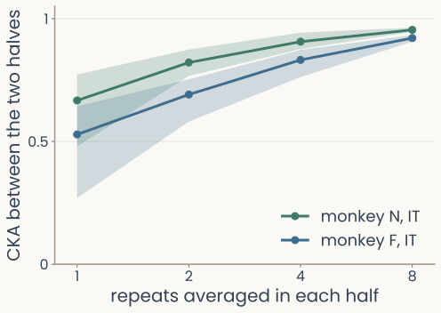
Line plot of the CKA between two separate halves of a monkey's IT recordings, as more repeats are averaged in each half, 1, 2, 4 and 8, for two monkeys. Agreement rises toward 1 as repeats are added, to 0.95 for monkey N and 0.92 for monkey F with 8 repeats per half, and the spread across random splits narrows
Open full-size figure
Computed: IT electrodes of two monkeys, 100 THINGS images, 20 random splits per number of repeats
- A model's score: CKA between the model and the IT recording
- Its ceiling: the same CKA between two halves of the recording, how well the brain agrees with itself. More repeats per half, closer to 1
- ResNet-18 vs IT, all repeats: 0.19 (monkey N), 0.36 (F). The halves agree at 0.95 and 0.92: the model is far from the ceiling
- Read a score against its ceiling: 0.3 is near the top if the ceiling is 0.35
Slide 30
The same area in another brain
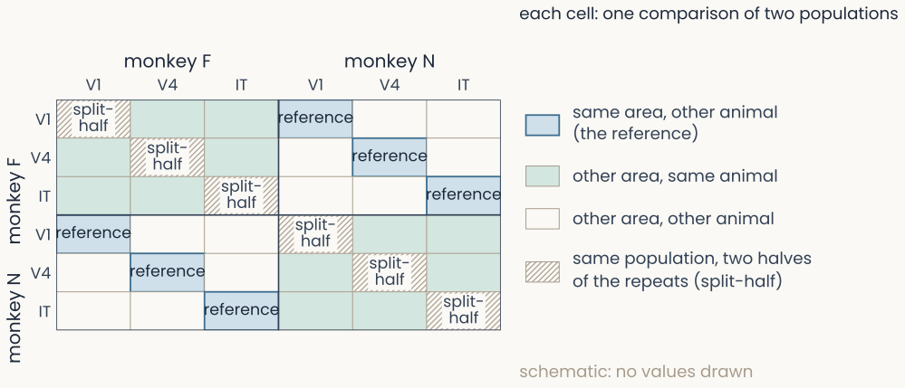
A 6 by 6 design grid: V1, V4 and IT of monkey F and of monkey N along both axes. Cells are labeled by what they compare: the same area in the same animal (the diagonal), the same area in the other animal, and different areas; no values are shown
Open full-size figure
Design only: 100 THINGS images × 30 repeats in V1, V4 and IT of two monkeys (Papale et al. 2025)
- Score every pair of recordings. The reference for "brain-like": the same area in another animal
- Report a score between its references: the shuffled floor, the noise ceiling, another brain
Slide 31
Change the measure, and the winner changes
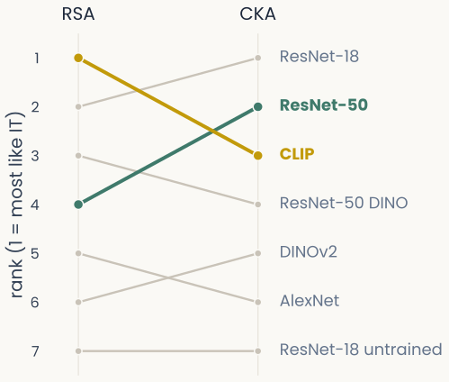
Slope plot ranking seven networks by similarity to monkey IT under two measures. CKA ranks ResNet-18 first, ResNet-50 second and CLIP third; RSA puts CLIP first, ResNet-18 second and ResNet-50 fourth. The untrained ResNet-18 is last under both
Open full-size figure
Computed: monkey IT (Bao et al.) vs seven networks, 51 object means, units z-scored
- Seven networks ranked by how alike they are to monkey IT, on the same 51 objects. Only the measure changes
- RSA puts CLIP first; CKA puts ResNet-18 first
- The top places are near-ties: what each measure ignores reorders them
Slide 32
One neuron
A readout is one model neuron. What does one unit respond to?
Slide 33
What a real neuron does, and what we keep
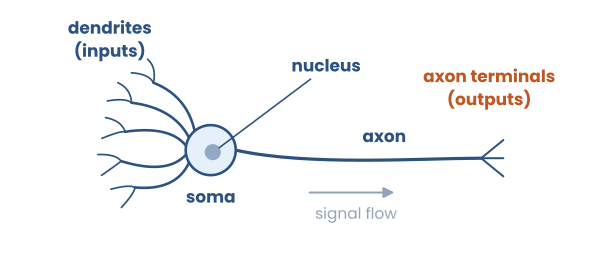
A biological neuron: synaptic inputs arrive on a branching dendritic tree, are integrated in the soma, and the output travels down the axon
Open full-size figure
- Inputs arrive at synapses on a branching dendritic tree; the soma sums their currents and, past a threshold, fires a spike down the axon
- How much current one input delivers, its synaptic strength, is what learning changes
- We keep weighted inputs, a sum passed through a nonlinearity, and one output: the firing rate
- We drop dendrites, spike timing and chemistry: a point neuron
Slide 34
Building the neuron: inputs
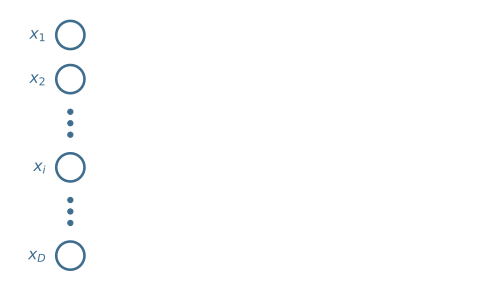
Inputs x1 through xd drawn as nodes feeding into a single neuron
Open full-size figure
- Each input is a number: a stimulus feature (a pixel, a sound amplitude) or another neuron's output
- We index them — there are of them in total
Slide 35
Building the neuron: weights
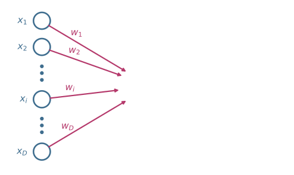
Each input connection to the neuron now carries its own weight w1 through wd
Open full-size figure
- Each input has a weight — the model's analogue of a synaptic strength
- The weights (with the bias) are the adjustable part: the inputs and the form of the computation are given
- This lecture we set the weights by hand. Next lecture the neuron learns them.
Slide 36
Building the neuron: summation
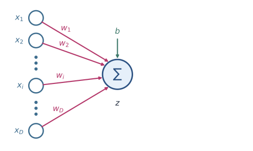
The weighted inputs converge on a summation node that adds them together with a bias b
Open full-size figure
- A weighted sum of the inputs, plus a bias (an adjustable threshold)
- This — the pre-activation — is the linear part of the computation
Slide 37
Building the neuron: activation and output
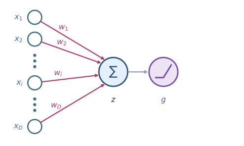
The summed input z passes through a nonlinearity g to produce the output activation a
Open full-size figure
- Apply a nonlinearity : , most often ReLU,
- The output is the neuron's activation: its stand-in for a firing rate
- Why nonlinear? Real neurons threshold their input, they fire only once it's strong enough
Slide 38
Transfer functions: the nonlinearity
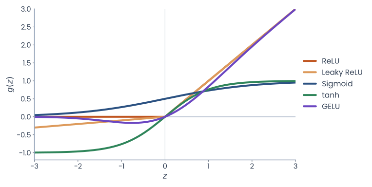
Five transfer-function curves on one set of axes: ReLU, leaky ReLU, sigmoid, tanh and GELU
Open full-size figure
- Biophysics: a neuron's f–I curve (rate vs current) is 0 below threshold, then rises (ReLU) and saturates (sigmoid, tanh)
- ReLU also makes deep networks easy to train, so it dominates modern networks
Slide 39
The weighted sum is a dot product
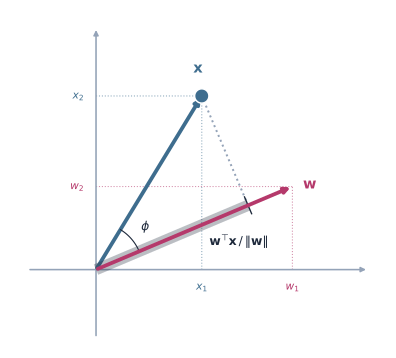
Vector x projected onto the weight vector w: the projection length, times the length of w, is the dot product, largest when the two align
Open full-size figure
- Stack the inputs and weights into vectors : the weighted sum is their dot product
- Geometry (left): , the projection of onto , scaled by
- Aligned with → large; perpendicular → zero; opposite → negative. The neuron asks how much of is in the input
- is the linear readout of the last two lectures: a readout is one model neuron
Slide 40
The single neuron, full picture
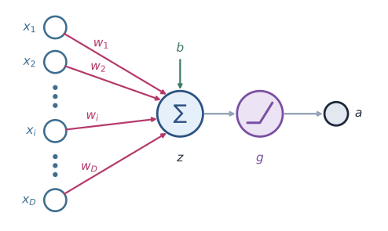
The complete single neuron: weighted inputs summed with a bias, passed through the nonlinearity g to give the activation a
Open full-size figure
Most networks in this course are built from many of these units
Slide 41
A neuron is a feature detector: template matching
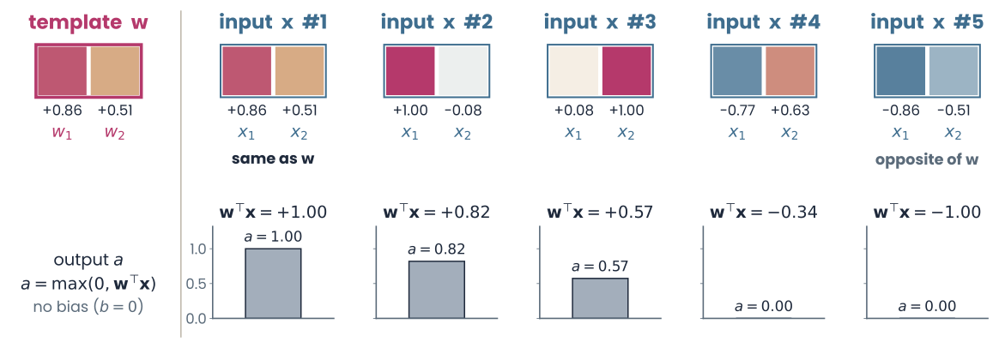
Left, the template w, a two-pixel patch with values +0.86 and +0.51. Right, five two-pixel inputs of length 1, each with its dot product with w and the output a = max(0, wᵀx), no bias: input 1, the same as w, wᵀx = +1.00, a = 1.00; input 2, +0.82, a = 0.82; input 3, +0.57, a = 0.57; input 4, −0.34, a = 0; input 5, the opposite of w, −1.00, a = 0
Open full-size figure
- Among inputs of the same length , is largest when looks like the weights — so acts as a stored template
- All inputs have length 1, so is the cosine of the angle to ; ReLU clips negatives to 0
- Set the weights by hand to a pattern → the neuron becomes a detector for that pattern
Slide 42
Recap
- Before trusting a score: its shuffled floor, a test on held-out images, its noise ceiling and the same area in another brain; then resample the images and try more than one measure
- A model neuron, like a readout, is a weighted sum through a nonlinearity, : it responds most to inputs that look like its weights
- Next lecture: characterizing neurons in brains and networks (receptive fields, tuning curves, Gabor fits), from one neuron to a layer, and where the weights come from
Slide 43
Further reading
- Schütt et al. eLife 2023: resampling images and participants to test a model ranking
- Safaie et al. Nature 2023: the same population dynamics in the motor cortex of different animals
- Papale et al. Neuron 2025: V1, V4 and IT in two monkeys, 30 repeats per image
- Zhang et al. ICLR 2017: deep networks fit random labels perfectly
Slide 44
Minute paper
Submit on Canvas → Minute papers → Minute Paper 8 (access code read out in class).
Write three brief points in your own words:
- A network's RSA with monkey IT is 0.20. Name three reference scores you would compute
before calling it high or low, and say what each one tells you. - Something you do not yet understand, or a question still open
- Another idea you found interesting, and why it matters for brains, behavior or AI
Credit for a thoughtful attempt, not for being correct.
Slide 45
Appendix
The first-layer results
Slide 46
AlexNet's first layer: tuning curves
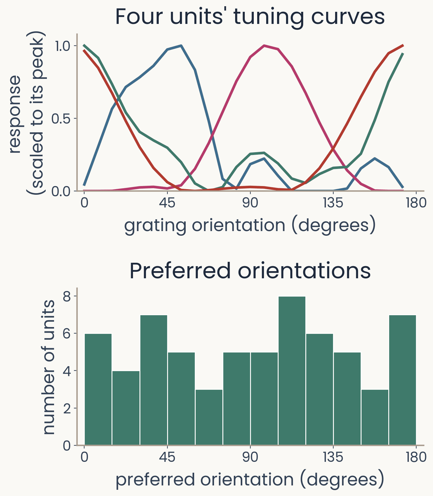
Top: tuning curves of four first-layer network units measured with gratings, each peaking at a different orientation. Bottom: histogram of the units' preferred orientations, with units in every 15-degree bin from 0 to 180
Open full-size figure
- The tuning-curve method of the lecture, applied to the 64 first-layer units of AlexNet: gratings at 24 orientations and 4 phases, rectified, then averaged over phase
- Top: the four most selective units, each scaled to its own peak
- Bottom: how many units prefer each orientation. Every 15-degree bin holds some units
Slide 47
Are they the same templates?
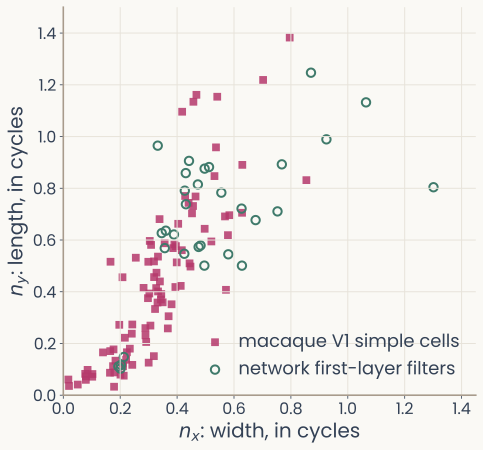
Scatter of Gabor width nx against length ny, both in cycles: macaque V1 simple cells cluster near the origin; the network's first-layer filters that a Gabor fits well overlap them but sit systematically larger
Open full-size figure
- AlexNet's first-layer filters that a Gabor fits well, on Ringach's plot
- Filled magenta squares: macaque V1 simple cells (Ringach 2002). Open green circles: the network's filters